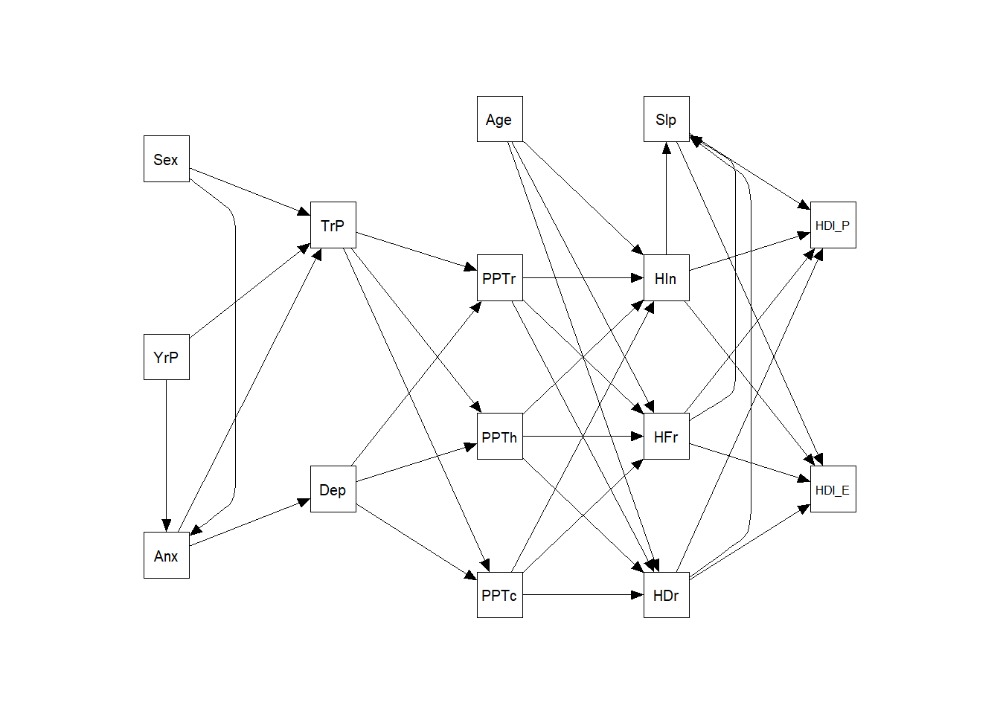
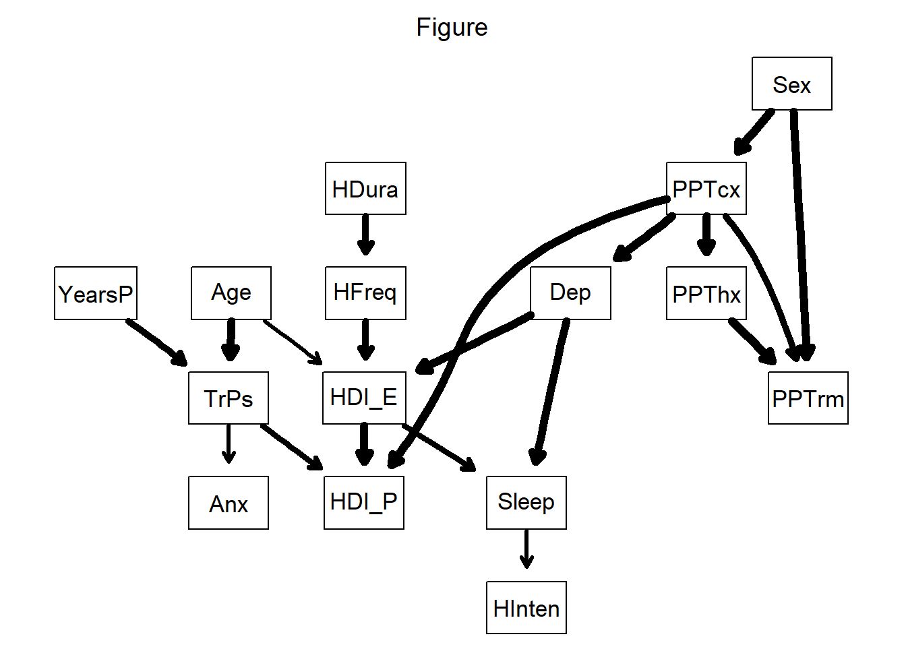
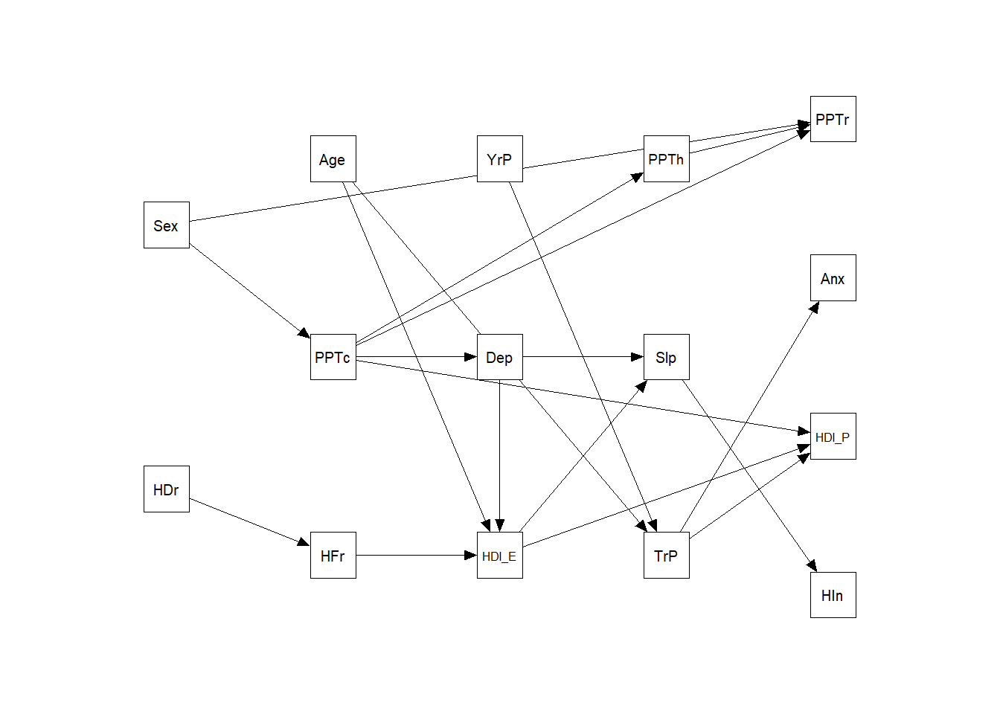

Last updated: 2021-11-02
Checks: 7 0
Knit directory: 2020_cts_bn/
This reproducible R Markdown analysis was created with workflowr (version 1.6.2). The Checks tab describes the reproducibility checks that were applied when the results were created. The Past versions tab lists the development history.
Great! Since the R Markdown file has been committed to the Git repository, you know the exact version of the code that produced these results.
Great job! The global environment was empty. Objects defined in the global environment can affect the analysis in your R Markdown file in unknown ways. For reproduciblity it’s best to always run the code in an empty environment.
The command set.seed(20200907) was run prior to running the code in the R Markdown file. Setting a seed ensures that any results that rely on randomness, e.g. subsampling or permutations, are reproducible.
Great job! Recording the operating system, R version, and package versions is critical for reproducibility.
Nice! There were no cached chunks for this analysis, so you can be confident that you successfully produced the results during this run.
Great job! Using relative paths to the files within your workflowr project makes it easier to run your code on other machines.
Great! You are using Git for version control. Tracking code development and connecting the code version to the results is critical for reproducibility.
The results in this page were generated with repository version 32b2704. See the Past versions tab to see a history of the changes made to the R Markdown and HTML files.
Note that you need to be careful to ensure that all relevant files for the analysis have been committed to Git prior to generating the results (you can use wflow_publish or wflow_git_commit). workflowr only checks the R Markdown file, but you know if there are other scripts or data files that it depends on. Below is the status of the Git repository when the results were generated:
Ignored files:
Ignored: .Rhistory
Ignored: .Rproj.user/
Untracked files:
Untracked: data/Data SP-FMS-PF-EXP Study for Bernard.sav
Unstaged changes:
Modified: output/res.RDS
Note that any generated files, e.g. HTML, png, CSS, etc., are not included in this status report because it is ok for generated content to have uncommitted changes.
These are the previous versions of the repository in which changes were made to the R Markdown (analysis/4-TTH.Rmd) and HTML (docs/4-TTH.html) files. If you’ve configured a remote Git repository (see ?wflow_git_remote), click on the hyperlinks in the table below to view the files as they were in that past version.
| File | Version | Author | Date | Message |
|---|---|---|---|---|
| Rmd | 32b2704 | bernard-liew | 2021-11-02 | updated p values |
| html | 5b386dd | bernard-liew | 2021-10-26 | Build site. |
| Rmd | 5ed8520 | bernard-liew | 2021-10-26 | Publish SEM-BN analysis |
| Rmd | 7c12715 | bernard-liew | 2021-08-27 | updated bn 2 sem code |
| Rmd | 77fcb3a | bernard-liew | 2021-06-23 | added tth data analysis |
rm (list = ls())
# Helper
library (tidyverse)
library (skimr)
library (flextable)
library (officer)
library (arsenal)
library (kableExtra)
# Parallel
library (doParallel)
# BN
library (bnlearn)
library (Rgraphviz)
# BN to SEM conversion
library (bnpa)
#SEM
library (lavaan)
library (semPlot)
library (nonnest2)
library (semTools)#df <- rio::import("data/Tension Type Headache Database.sav")
res <- readRDS("output/res.RDS")
list2env(res,globalenv())<environment: R_GlobalEnv>#skim (df)https://psu-psychology.github.io/psy-597-SEM/09_model_comparison/model_comparison.html
names (df) <- tolower (names(df))
df <- map_df(df, function(x) {attributes(x) <- NULL;x})
# Remove high missing
df <- df %>%
purrr::discard(~sum(is.na(.x))/length(.x)* 100 >=40)
rm_vars <- c("trpsactive",
"trpslatent",
"general_health",
"vitality",
"social_function",
"emorional_role",
"mental_health",
"physical_function",
"phyusical_role",
"bodily_pain",
grep ("udp", names (df), value = TRUE))
df2 <- df %>%
mutate (ppt_cx = (udp_c5c6_right + udp_c5c6_left)/2,
ppt_hx = (udp_temporal_right + udp_temporal_left)/2,
ppt_rm = (udp_iimeta_right + udp_iimeta_left + udp_tibial_right + udp_tibial_left )/4) %>%
dplyr::select (-all_of (rm_vars ))
new_names <- c("Sex",
"Age",
"YearsP",
"HInten",
"HDura",
"HFreq",
"TrPs",
"HDI_E",
"HDI_P",
"Sleep",
"Dep",
"Anx",
"PPTcx",
"PPThx",
"PPTrm")
names (df2) <- new_names
df2$Sex <- factor (df2$Sex)
#df2$sex <- df2$sex -1meanNsd_transform <- function (x) {
m <- round (x[[1]][1], 2)
s <- round (x[[1]][2], 2)
m_s <- paste0(m, "(", s, ")")
return (m_s)
}
tab1 <- tableby ( ~. , data = df2, digits = 2, digits.p = 2) %>%
as.data.frame() %>%
filter (!term %in% c("Nmiss", "range")) %>%
select (-c(group.term:term, variable.type, Total))
tab2 <- tab1[-c (1, seq (4, 34, 2)),]
tab2$label <- c("Sex-Male", "Sex-Female", "Age(years)", "Years with headache",
"Headache intensity", "Headache duration (hrs)", "Headache frequency",
"Trigger points", "HDI-emotion", "HDI- physical",
"Sleep", "Depressive symptoms", "Anxiety symptoms",
"PPT-cervical", "PPT-head", "PPT-remote")
for(row in 1:nrow(tab2)) {
tab2[row, 2] <- meanNsd_transform (tab2[row, 2])
}
colnames (tab2) <- c ("Variables",
"Summary value")
my_path <- paste0("../manuscript_tth/table_2",
"baseline",
".docx")
ft <- flextable(tab2) %>%
set_caption(caption = " Table 2.Baseline descriptive characteristics of cohort") %>%
autofit()
my_doc <- read_docx() %>%
body_add_flextable(ft)
print (my_doc, target = my_path)tab2 %>%
kbl() %>%
kable_styling()| Variables | Summary value | |
|---|---|---|
| 2 | Sex-Male | 59(28.37) |
| 3 | Sex-Female | 149(71.63) |
| 5 | Age(years) | 44.72(14.37) |
| 7 | Years with headache | 10.34(11.25) |
| 9 | Headache intensity | 6.1(2.65) |
| 11 | Headache duration (hrs) | 7.41(4.35) |
| 13 | Headache frequency | 16.82(9.45) |
| 15 | Trigger points | 6.15(3.69) |
| 17 | HDI-emotion | 19.07(13.24) |
| 19 | HDI- physical | 22.8(12.26) |
| 21 | Sleep | 8.01(4.39) |
| 23 | Depressive symptoms | 7.92(4.45) |
| 25 | Anxiety symptoms | 9.91(4.66) |
| 27 | PPT-cervical | 227.91(136.61) |
| 29 | PPT-head | 213.32(94.46) |
| 31 | PPT-remote | 341.13(151.74) |
dat_imp <- mice::mice(df2, seed = 155)
df3 <- complete(dat_imp) %>%
mutate_if(is.numeric, scale, center = TRUE, scale = TRUE)
df3$sex <- as.numeric (df3$sex) - 1sem_form1 <- "
# paths
Anx ~ YearsP + Sex
Dep ~ Anx
TrPs ~ YearsP + Sex + Anx
PPTcx + PPThx + PPTrm ~ TrPs + Dep
HDura + HFreq + HInten ~ PPTcx + PPThx + PPTrm + Age
Sleep ~ HDura + HFreq + HInten
HDI_E + HDI_P ~ HDura + HFreq + HInten + Sleep
"
m1 <- sem (sem_form1, data = df3, conditional.x = FALSE)
summary (m1)
rm_cov <- summary (m1)$PE %>%
filter (op == "~~") %>%
filter (!is.na(pvalue)) %>%
filter (lhs != rhs)
if (nrow (rm_cov) >= 1) {
rm_cov <- paste0(rm_cov$lhs,
rm_cov$op,
paste0("0*", rm_cov$rhs))
sem_form1 <- c(sem_form1,
rm_cov)
}
m1 <- sem (sem_form1, data = df3, conditional.x = FALSE)
m1_2 <- sem (sem_form1, data = df3, conditional.x = FALSE, se = "boot",
bootstrap = 1000)
param1 <- parameterEstimates (m1_2,
se = TRUE,
zstat = TRUE,
pvalue = TRUE,
ci = TRUE,
level = 0.95,
boot.ci.type = "perc")
param1 <- param1 %>%
mutate (pvalue_adj = ifelse (pvalue < (0.05/2), "s", "ns"))
#summary (m1)semPaths (m1,
what = "path",
layout = "tree3",
curvePivot = TRUE,
residuals = FALSE,
intercept = TRUE,
fixedStyle = c(adjustcolor( "white", alpha.f = 0), 0),
rotation = 2,
curve = TRUE,
freeStyle = c("black", 1))
# Export lavaan table
param_ex <- param1 %>%
filter (op == "~") %>%
rename (DV = lhs,
IV = rhs,
Coef = est,
SE = se,
`2.5%CI` = ci.lower,
`97.5%CI` = ci.upper) %>%
mutate_if (is.numeric, round, 3) %>%
select ( DV, IV, Coef, SE, `2.5%CI`, `97.5%CI`, pvalue, - c(op, z))
astx <- ifelse(param_ex$pvalue < (0.05/2), "*", "")
# Export figure
png ("../manuscript_tth/fig1.png", height = 8, width = 15, units = "in", res = 100)
semPaths (m1,
what = "path",
layout = "tree3",
whatLabels= "no",
curve = TRUE,
fixedStyle = c(adjustcolor( "white", alpha.f = 0), 0),
residuals = FALSE,
nCharNodes = 0,
intercept = TRUE,
edgeLabels = astx,
edge.label.cex = 1,
edge.label.position = 0.4,
# trans = FALSE,
# fade = FALSE,
freeStyle = c("black", 1),
rotation = 2)
dev.off()
# Export lavaan table
param_ex <- param_ex %>%
arrange (desc(abs (Coef)))
my_path <- paste0("../manuscript_tth/sm_table1",
"theory",
".docx")
ft <- flextable(param_ex) %>%
set_caption(caption = " Table 1.Parameter estimates for model theory") %>%
autofit()
my_doc <- read_docx() %>%
body_add_flextable(ft)
print (my_doc, target = my_path)df.bn <- as.data.frame (df3) %>%
mutate (Sex = factor (Sex))
demo.var = grep("Age|Sex|YearsP", colnames (df.bn), value = TRUE)
physiol.var = grep("PPT|TrPs", colnames (df.bn), value = TRUE)
others.var = setdiff (names(df.bn), c(demo.var, physiol.var))
pair_var <- expand.grid(from = names (df.bn),
to = names (df.bn)) %>%
rownames_to_column()
tiers_keep <- pair_var %>%
filter (!(grepl (paste0(demo.var, collapse = "|"),to))) %>%
filter (! (grepl (paste0(others.var, collapse = "|"), from) &
grepl (paste0(physiol.var, collapse = "|"), to)))
bl <- anti_join(pair_var, tiers_keep, by = "rowname") %>%
filter (from != to) %>%
select (-rowname)%>%
mutate_all(as.character)n_boot <- 1000
set.seed (20200424)
boot <- boot.strength(df.bn,
R = n_boot,
algorithm = "hc",
algorithm.args = list (blacklist = bl))set_thres <- seq (0.5, 0.8, 0.01) # try 0.5, 0.6, 0.7. 0.8, the higher to one the sparser the model
avg_list <- vector ("list", length (set_thres))
deg_list <- vector ("list", length (set_thres))
for (n in seq_along(set_thres)) {
avg_list[[n]] <- averaged.network(boot, threshold = set_thres[n])
deg_list[[n]] <- sum (map(bnlearn::nodes(avg_list[[n]]), bnlearn::degree, obj = avg_list[[n]]) == 0)
}
deg <- unlist (deg_list)
thres <- set_thres[tail(which(deg ==0),1)]
thres[1] 0.71avg <- averaged.network(boot, threshold = thres)
#avg <- set.arc(avg, "dep", "hdi_E")
fit <- bn.fit (avg, df.bn, method = "mle")
g = strength.plot(avg,
boot,
shape = "rectangle",
main = "Figure")
# graph::nodeRenderInfo(g) = list(fontsize=32)
# renderGraph(g)sem_form2 <- gera.pa.model(fit, df.bn)
Mounting a PA input model...m2 <- lavaan::sem (sem_form2, data = df3, conditional.x = FALSE)rm_cov <- summary (m2)$PE %>%
filter (op == "~~") %>%
filter (!is.na(pvalue)) %>%
filter (lhs != rhs)lavaan 0.6-9 ended normally after 34 iterations
Estimator ML
Optimization method NLMINB
Number of model parameters 36
Number of observations 208
Model Test User Model:
Test statistic 209.951
Degrees of freedom 74
P-value (Chi-square) 0.000
Parameter Estimates:
Standard errors Standard
Information Expected
Information saturated (h1) model Structured
Regressions:
Estimate Std.Err z-value P(>|z|)
HInten ~
Sleep (c1) 0.230 0.067 3.461 0.001
HFreq ~
HDura (c2) 0.334 0.065 5.107 0.000
TrPs ~
Age (c3) -0.303 0.066 -4.597 0.000
YearsP (c4) 0.258 0.066 3.910 0.000
HDI_E ~
Age (c5) -0.205 0.056 -3.652 0.000
HFreq (c6) 0.285 0.056 5.095 0.000
Dep (c7) 0.462 0.056 8.255 0.000
HDI_P ~
TrPs (c8) 0.158 0.036 4.343 0.000
HDI_E (c9) 0.773 0.037 20.896 0.000
PPTcx (c10) -0.201 0.037 -5.452 0.000
Sleep ~
HDI_E (c11) 0.232 0.067 3.479 0.001
Dep (c12) 0.379 0.066 5.728 0.000
Dep ~
PPTcx (c13) -0.398 0.064 -6.258 0.000
Anx ~
TrPs (c14) -0.210 0.067 -3.129 0.002
PPTcx ~
Sex (c15) -0.849 0.142 -5.994 0.000
PPThx ~
PPTcx (c16) 0.804 0.041 19.532 0.000
PPTrm ~
Sex (c17) -0.445 0.084 -5.308 0.000
PPTcx (c18) 0.292 0.061 4.817 0.000
PPThx (c19) 0.508 0.059 8.628 0.000
Covariances:
Estimate Std.Err z-value P(>|z|)
.HInten ~~
.HDI_P 0.014 0.035 0.411 0.681
.Anx 0.086 0.065 1.326 0.185
.PPTrm 0.052 0.034 1.514 0.130
.HDI_P ~~
.Anx -0.046 0.035 -1.300 0.194
.PPTrm 0.022 0.019 1.196 0.232
.Anx ~~
.PPTrm 0.033 0.034 0.976 0.329
Variances:
Estimate Std.Err z-value P(>|z|)
.HInten 0.930 0.091 10.198 0.000
.HFreq 0.884 0.087 10.198 0.000
.TrPs 0.867 0.085 10.198 0.000
.HDI_E 0.649 0.064 10.198 0.000
.HDI_P 0.274 0.027 10.198 0.000
.Sleep 0.713 0.070 10.198 0.000
.Dep 0.837 0.082 10.198 0.000
.Anx 0.943 0.093 10.198 0.000
.PPTcx 0.849 0.083 10.198 0.000
.PPThx 0.351 0.034 10.198 0.000
.PPTrm 0.259 0.025 10.198 0.000if (nrow (rm_cov) >= 1) {
rm_cov <- paste0(rm_cov$lhs,
rm_cov$op,
paste0("0*", rm_cov$rhs))
}
fits <- as.lm (avg, df.bn)Warning in model.response(mf, "numeric"): using type = "numeric" with a factor
response will be ignoredWarning in Ops.factor(y, z$residuals): '-' not meaningful for factorsfit.form <- map (fits, formula)
fit.form <- fit.form[!grepl ("~ 1", fit.form)]
sem_form3 <- map_chr (fit.form, deparse)
sem_form3 <- c(sem_form3,
rm_cov)
m3 <- lavaan::sem (sem_form3, data = df3, conditional.x = FALSE)
m3_2 <- sem (sem_form3, data = df3, conditional.x = FALSE, se = "boot",
bootstrap = 1000)
param3 <- parameterEstimates (m3_2,
se = TRUE,
ci = TRUE,
level = 0.95,
boot.ci.type = "perc")
param3_adj <- param3 %>%
mutate (pvalue_adj = ifelse (pvalue < (0.05/46), "s", "ns"))semPaths (m3,
what = "path",
layout = "tree3",
curvePivot = TRUE,
residuals = FALSE,
intercept = TRUE,
fixedStyle = c(adjustcolor( "white", alpha.f = 0), 0),
rotation = 2,
curve = TRUE,
freeStyle = c("black", 1))
# Export lavaan table
param_ex <- param3 %>%
filter (op == "~") %>%
rename (DV = lhs,
IV = rhs,
Coef = est,
SE = se,
`2.5%CI` = ci.lower,
`97.5%CI` = ci.upper) %>%
mutate_if (is.numeric, round, 3) %>%
select ( DV, IV, Coef, SE, `2.5%CI`, `97.5%CI`, pvalue, - c(op, z))
astx <- ifelse(param_ex$pvalue < (0.05/2), "*", "")
png ("../manuscript_tth/fig2.png", height = 8, width = 15, units = "in", res = 100)
semPaths (m3,
what = "path",
layout = "tree3",
whatLabels= "no",
curve = TRUE,
fixedStyle = c(adjustcolor( "white", alpha.f = 0), 0),
residuals = FALSE,
nCharNodes = 0,
intercept = TRUE,
edgeLabels = astx,
edge.label.cex = 1,
edge.label.position = 0.4,
# trans = FALSE,
# fade = FALSE,
freeStyle = c("black", 1),
rotation = 2)
dev.off()
# Export lavaan table
param_ex <- param_ex %>%
arrange (desc(abs (Coef)))
my_path <- paste0("../manuscript_tth/sm_table2",
"bn",
".docx")
ft <- flextable(param_ex) %>%
set_caption(caption = " Table 2.Parameter estimates for model BN") %>%
autofit()
my_doc <- read_docx() %>%
body_add_flextable(ft)
print (my_doc, target = my_path)fitMeasures(m1, fit.measures = c("rmsea", "pvalue", "cfi", "tli", "srmr", "nnfi")) rmsea pvalue cfi tli srmr nnfi
0.251 0.000 0.261 -0.124 0.178 -0.124 fitMeasures(m3, fit.measures = c("rmsea", "pvalue", "cfi", "tli", "srmr", "nnfi")) rmsea pvalue cfi tli srmr nnfi
0.091 0.000 0.884 0.857 0.107 0.857 vuongtest(m1, m3, adj = "bic")
Model 1
Class: lavaan
Call: lavaan::lavaan(model = sem_form1, data = df3, conditional.x = FALSE, ...
Model 2
Class: lavaan
Call: lavaan::lavaan(model = sem_form3, data = df3, conditional.x = FALSE, ...
Variance test
H0: Model 1 and Model 2 are indistinguishable
H1: Model 1 and Model 2 are distinguishable
w2 = 5.024, p = 2.08e-09
Non-nested likelihood ratio test
H0: Model fits are equal for the focal population
H1A: Model 1 fits better than Model 2
z = -21.743, p = 1
H1B: Model 2 fits better than Model 1
z = -21.743, p = < 2.2e-16#icci(m1, m3)res <- list (m0 = m0,
m1 = m1,
m1_2 = m1_2,
m3 = m3,
m3_2 = m3_2,
df = df,
df3 = df3,
boot = boot)
saveRDS (res,
"output/res.RDS")
sessionInfo()R version 4.0.2 (2020-06-22)
Platform: x86_64-w64-mingw32/x64 (64-bit)
Running under: Windows 10 x64 (build 19042)
Matrix products: default
locale:
[1] LC_COLLATE=English_United Kingdom.1252
[2] LC_CTYPE=English_United Kingdom.1252
[3] LC_MONETARY=English_United Kingdom.1252
[4] LC_NUMERIC=C
[5] LC_TIME=English_United Kingdom.1252
attached base packages:
[1] grid parallel stats graphics grDevices utils datasets
[8] methods base
other attached packages:
[1] semTools_0.5-3 nonnest2_0.5-5 semPlot_1.1.2
[4] lavaan_0.6-9 bnpa_0.3.0 Rgraphviz_2.34.0
[7] graph_1.68.0 BiocGenerics_0.36.0 bnlearn_4.6.1
[10] doParallel_1.0.16 iterators_1.0.13 foreach_1.5.1
[13] kableExtra_1.3.1 arsenal_3.5.0 officer_0.3.16
[16] flextable_0.6.1 skimr_2.1.2 forcats_0.5.0
[19] stringr_1.4.0 dplyr_1.0.2 purrr_0.3.4
[22] readr_1.4.0 tidyr_1.1.2 tibble_3.0.4
[25] ggplot2_3.3.3 tidyverse_1.3.0
loaded via a namespace (and not attached):
[1] readxl_1.3.1 uuid_0.1-4 backports_1.2.1
[4] BDgraph_2.63 Hmisc_4.4-2 workflowr_1.6.2
[7] systemfonts_0.3.2 igraph_1.2.6 plyr_1.8.6
[10] repr_1.1.0 splines_4.0.2 TH.data_1.0-10
[13] digest_0.6.27 htmltools_0.5.0 matrixcalc_1.0-3
[16] fansi_0.4.1 magrittr_2.0.1 Rsolnp_1.16
[19] checkmate_2.0.0 lisrelToR_0.1.4 cluster_2.1.0
[22] openxlsx_4.2.3 modelr_0.1.8 sandwich_3.0-0
[25] jpeg_0.1-8.1 sem_3.1-11 colorspace_2.0-0
[28] rvest_0.3.6 haven_2.3.1 xfun_0.25
[31] crayon_1.3.4 jsonlite_1.7.2 lme4_1.1-26
[34] regsem_1.6.2 zoo_1.8-8 survival_3.2-7
[37] glue_1.4.2 gtable_0.3.0 emmeans_1.6.1
[40] webshot_0.5.2 mi_1.0 abind_1.4-5
[43] scales_1.1.1 mvtnorm_1.1-1 DBI_1.1.0
[46] Rcpp_1.0.6 viridisLite_0.3.0 xtable_1.8-4
[49] htmlTable_2.1.0 tmvnsim_1.0-2 foreign_0.8-81
[52] Formula_1.2-4 stats4_4.0.2 truncnorm_1.0-8
[55] htmlwidgets_1.5.3 httr_1.4.2 RColorBrewer_1.1-2
[58] ellipsis_0.3.1 XML_3.99-0.5 pkgconfig_2.0.3
[61] nnet_7.3-14 kutils_1.70 dbplyr_2.0.0
[64] reshape2_1.4.4 tidyselect_1.1.0 rlang_0.4.10
[67] later_1.1.0.1 munsell_0.5.0 cellranger_1.1.0
[70] tools_4.0.2 cli_2.2.0 generics_0.1.0
[73] broom_0.7.9 fdrtool_1.2.16 evaluate_0.14
[76] arm_1.11-2 yaml_2.2.1 knitr_1.30
[79] fs_1.5.0 zip_2.1.1 glasso_1.11
[82] pbapply_1.4-3 nlme_3.1-151 whisker_0.4
[85] xml2_1.3.2 compiler_4.0.2 rstudioapi_0.13
[88] png_0.1-7 huge_1.3.4.1 reprex_0.3.0
[91] statmod_1.4.35 pbivnorm_0.6.0 stringi_1.5.3
[94] highr_0.8 ps_1.5.0 qgraph_1.6.5
[97] rockchalk_1.8.144 gdtools_0.2.3 lattice_0.20-41
[100] Matrix_1.2-18 psych_2.0.12 nloptr_1.2.2.2
[103] vctrs_0.3.6 CompQuadForm_1.4.3 pillar_1.4.7
[106] lifecycle_0.2.0 estimability_1.3 OpenMx_2.18.1
[109] corpcor_1.6.9 data.table_1.14.0 httpuv_1.5.4
[112] R6_2.5.0 latticeExtra_0.6-29 promises_1.1.1
[115] gridExtra_2.3 codetools_0.2-18 gtools_3.8.2
[118] boot_1.3-25 MASS_7.3-53 assertthat_0.2.1
[121] rjson_0.2.20 rprojroot_2.0.2 withr_2.3.0
[124] mnormt_2.0.2 multcomp_1.4-15 hms_0.5.3
[127] rpart_4.1-15 coda_0.19-4 minqa_1.2.4
[130] rmarkdown_2.10 carData_3.0-4 d3Network_0.5.2.1
[133] git2r_0.27.1 lubridate_1.7.9.2 base64enc_0.1-3